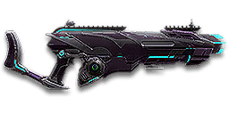

Sage Guide · Vanu Sovereignty · Heavy Assault
The Vanu long-range light machine gun. It costs 1,000 certs — so this page first tells you what it does that your free Orion can't, then teaches you to win fights with it.
The one-line verdict: a slow-firing, hard-hitting, laser-straight LMG built for mid-to-long range. It keeps 7-shot kills at every distance in the game — the best minimum damage of any 167-damage LMG — and punishes spray-and-pray and close-quarters brawls. Fight at 15–50 metres and it will carry you.

The Ursa · Vanu Sovereignty · 75-round magazine · 1,000 certs / 699 Daybreak Cash
Picture the scene, because you've probably lived it: you're sprinting across a courtyard, an enemy appears, and you do everything at once — hold the trigger down while you're still running, then press aim-down-sights (ADS) a split-second later, finger still down. The sight picture snaps in, it looks precise… and your bullets spray everywhere except the man in your crosshair. He kills you. It feels like the game cheated. It didn't — here's what actually happened.
Sprinting, trigger held, sight raised mid-hold — three things in the wrong order. Read it left to right.
What happened: you started firing from a sprint, from the hip — cone already at 7.0°, fully bloomed — and every hipfire shot widened it further (+0.12° per shot). Pressing ADS mid-hold only changed the picture; the bullets kept flying out of the wide cone you had already built. Two timers stack the deck further: the gun needs about 0.3 s to settle after a sprint, and raising the sight takes ~0.15 s. Trigger held through all of it means your first half-second of fire is pure confetti.
Stop. Aim. Fire. One beat at a time — never two at once.
The rhythm: 1 · Feet — stop, or drop into a strafe. 2 · Sight — press ADS and let it come up; your overshield (F) covers the heartbeat it takes. 3 · Trigger — now fire, starting from the aimed cone of 0.03°. Stop → aim → fire. If you take one habit from this entire page, take this one. You'll practise exactly this rhythm in the simulator in section 04.
Inside about 8 metres, don't ADS at all — hipfire and keep moving. At arm's length your hipfire ring is only about half a metre wide (section 05), so the shots land, and staying mobile keeps you alive. Scoping in costs time and halves your speed — here, that gets you killed. No ADS needed, and stopping is optional: strafe, hipfire, let the overshield soak the return fire.
The disaster above is a mid-range problem: close enough that you reached for the sight, far enough that the spray missed. When in doubt: release everything, aim, then shoot.
You started firing from a sprint, from the hip. Sprinting is the least accurate state in the game: your cone of fire starts at 7.0° — fully bloomed, the widest it can ever be. Every shot you fire from the hip widens it further still (+0.12° per shot).
Then you pressed ADS mid-hold — and nothing reset. Aiming down sights does not shrink a cone of fire that is already bloomed. The scope only gives you a precise picture; the bullets keep flying out of the wide cone you built while running and hipfiring. That's the whole mystery: accurate-looking aim, wildly inaccurate gun.
Two timers stack the deck further: your gun needs about 0.3 s to settle after a sprint, and raising the sight itself takes ~0.15 s. Trigger held through all of it means your first half-second of fire is pure confetti.
1 · Feet. Let go of sprint (and the trigger, if you're already holding it). Stop, or drop into a strafe — anything but a full sprint.
2 · Sight. Press ADS and let the sight come up. This takes a heartbeat — that's fine, your overshield (F) covers it.
3 · Trigger. Now fire. Starting from the aimed cone of 0.03°, your first shots land where the dot points, and you control the bloom from zero instead of inheriting a maxed-out cone.
Stop → aim → fire. If you take one habit from this entire page, take this one. You'll practise exactly this rhythm in the simulator in section 04.
Every enemy infantry has 1,000 health (500 shield + 500 health). Your bullet does 167 damage up close, fading to 143 at long range — and that 143 is the highest minimum damage of any 167-damage LMG in the game. Headshots count double, leg shots count less (×0.9). That gives you just two numbers worth memorising:
| Range | Damage | Head | Chest | Legs | Chest vs shielded Heavy |
|---|---|---|---|---|---|
| Close · 0–10 m | 167 | 3 | 6 | 7 | 9 |
| Mid–far · 11–75 m+ | 167→143 | 4 | 7 | 8 | 11 |
Only two tiers — there is no third band where the Ursa falls off a cliff. Damage per second: 1531 up close, 1311 at long range. Perfect-accuracy times to kill: 3 headshots ≈ 0.22 s, 6 chest shots ≈ 0.55 s up close, 7 chest shots ≈ 0.65 s at any longer range. In real fights you'll land maybe half your rounds — still, this is why the head matters so much on this gun, and why the Ursa's whole identity is "the 167-damage LMG that never gets weak".
Full power to 10 m, then a gentle slide to 143 at 75 m — and it never goes lower. The teal line shows High Velocity Ammunition, which stretches the slide out to 95 m.
One gun, four fighting styles. The right technique changes with distance — use the range finder below to see what your bullets do at any range, then learn the four bands underneath it.
How to fight hereThis is where the Ursa lives. Aim down sights at the chest, bursts of 5, release between them. Pull straight down against the climb — it never drifts sideways.
Aim: centre of the chest, from the hip. Keep moving.
Scoping in costs you time and halves your move speed — at arm's length that gets you killed. The Ursa's hipfire is only mediocre for an LMG (3.75° standing), so keep it truly point-blank and let the 75-round magazine and your overshield do the work. Strafe side to side (A/D) while firing so you're hard to track.
Aim: neck / upper chest. Bursts of 5 rounds.
Full 167 damage to 11 m, then 7 shots to kill — and it stays 7 shots from here on out. Start your crosshair at the neck — the natural upward climb walks your shots into the head, and 3 head hits end the fight in about a fifth of a second. Strafe while scoped; you're slower, but a moving target still beats a still one.
Aim: chest. Bursts of 5 rounds, pause between them.
This is the range the Ursa was built for: your damage is still 150+ per bullet, your cone blooms slowly if you hold the trigger, and your bullets fly at 640 m/s — the fastest of any VS LMG — so you barely need to lead moving targets. Fire a burst, release for a split second to let accuracy reset, fire again. The recoil climbs straight up (0° angle), so pull your mouse gently straight down. Crouch or stand still when you can — both tighten your shots.
Aim: chest. Bursts of 5 at exposed targets; short taps past 75 m.
Every other 167-damage LMG has faded to 125 by now; you are still at 143, still 7 chest shots, still 4 headshots. A CARV or Orion out here needs 9 chest shots — you need 7. Take these shots at stationary or fleeing targets, medics reviving, and engineers on turrets. High Velocity Ammunition stretches your full-power slide to 95 m and makes the bullets even faster. This is the range you paid 1,000 certs for.
Your accuracy is decided by two things before skill even enters it: what your body is doing (your stance sets the starting cone of fire) and what your finger is doing (holding the trigger grows that cone with every shot). The Ursa has no fire-mode switch — full-auto only — so "firing modes" are something you do with your finger, not a setting on the gun.
| Stance | Starting cone | What it means for you |
|---|---|---|
| Sprinting | 7.0° | Maxed out — the widest the cone can be. This is the section 01 disaster: never start firing from a sprint. |
| Hipfire, moving | 4.25° | Walking or strafing from the hip. Fine inside ~8 m, leaks rounds past the target beyond it. |
| Hipfire, standing | 3.75° | Your point-blank default. The 0.52 m ring at 8 m in section 05 is this stance drawn out. |
| Hipfire, crouched | 3.25° | The tightest hipfire you have (3.75° if you crouch-walk). Crouch when holding a doorway from the hip. |
| Aimed (ADS), feet planted | 0.03° | Standing or crouched makes no difference here — a hundred times tighter than hipfire. This is why section 01's order matters. |
| Aimed (ADS), strafing | 0.35° | Still tight, but ten times wider than planted — and you move at half speed (0.5×). Strafe between bursts to stay hard to hit; plant your feet during each burst. |
| Mode | How your finger does it | Use it at |
|---|---|---|
| The mag dump | Hold the trigger and don't let go | Point blank only, or suppressing a doorway. Bloom maxes out fast — past ~8 rounds you're spraying, not aiming. (With 75 rounds you can afford it more than most — but the rounds still miss.) |
| Bursts — the default | Hold for 5 rounds, release ~0.15 s, hold again | Almost everything, 8–75 m. Each release resets the cone, so every burst starts at 0.03°. |
| Tap-fire | Short taps of 3–5, or single clicks, with a real pause between | Past 75 m, at exposed or stationary targets. Slow, but every round goes where the dot is — and at 143 damage, 7 of them still kill. |
A target 30 m away, aiming down sights. Press and hold FIRE (mouse, touch, or hold Space with the button focused) and watch the holes walk wider the longer you hold — that's firing from an ever-growing cone. Release, let the cone reset, fire again. Aim for bursts of 5; 6–8 is tolerable while you're new. This practice window is shared by the whole Sage series: it's driven by a weapon profile plugged into the window — here the Ursa's (550 RPM, 0.03° starting cone, 0.06° bloom per shot, target at 30 m) — and the spread is drawn at true scale from those numbers.
Cone of fire — fills as you hold, empties when you release.
Your bursts will be graded here — green at 5 rounds, tolerable up to 8.
Some things are easier to show than to say. Here's what your bullets actually do: how wide hipfire spreads at 8 metres, what a good burst rhythm looks like, and what the 2x sight really changes. The hands-on version — holding the trigger yourself — is the practice window in section 04.
A full-size target 8 m away — an arm's-length room fight. The rings show where hipfire rounds land around your aim point (the chest). Sizes are drawn to scale from the gun's real cone-of-fire numbers.
Read it this way: standing still, the 0.52 m ring roughly covers the chest — most rounds hit a target this size, which is why hipfire works point-blank. But move and it grows to 0.59 m — wider than the torso — so the edge rounds start leaking past him, and the rings only grow with distance while the man doesn't. Past ~10 m that's rounds missing entirely: the exact moment to switch to aiming down sights, where the spread shrinks to a dot. (Ring sizes use the real geometry: spread diameter = 2 × distance × tan(cone ÷ 2).)
Every shot widens your cone of fire ("bloom"). Releasing the trigger for a heartbeat resets it. Same 15 rounds, two very different outcomes:
The target pattern is bursts of 5 rounds — that's the ideal. Bursts of 6–8 are fine while you're new (call it newbie tolerance). Past that, the bloom (0.06° per shot aimed, 0.12° from the hip) keeps growing with every shot, so the extra bullets mostly decorate the wall behind your enemy instead of hitting him. Short bursts also leave you rounds for the second enemy — and with 75 in the magazine, two kills per mag is a realistic goal, not a dream.
No zoom. The target at 35 m is small but the view is wide open — you see the crate, the tower, and the next enemy coming. Fast to aim, nothing blocks your edges. Best inside ~40 m.
Same target, same 35 m — but he looks twice as tall, so placing shots on his chest and head gets much easier. The price: your view narrows to the round window, the crate and tower are gone, and close targets feel fast and huge. Best at 25–50 m — which is exactly where the Ursa lives.
That's the whole 30-cert decision from section 06 in one picture: 1x for awareness, 2x for precision. Most veterans carry both and swap per base — indoors 1x, open ground 2x.
Unlike the starter guns, the Ursa comes bare: iron sights, no grip, no ammo — everything below is a purchase. That also means every cert you spend is a real choice. Buy in the order shown and stop whenever the gun feels right.
No magnification, no dot — the bare gun. Usable, but a reflex sight is the cheapest real upgrade in the game.
Good: your first hour, while you decide if the Ursa is for you.
Bad: as a permanent setup — 30 certs buys a much cleaner picture.
A clean dot-and-circle sight with no zoom. Your default once you spend anything.
Good: everywhere indoors and out to ~40 m — which is most PlanetSide fights.
Bad: picking out targets past 50 m; that's what the 2x is for.
Doubles your view magnification. Costs almost nothing — the price of a couple of kills.
Good: open-field bases, tower fights, and your 25–50 m burst game — the Ursa's home turf. Swap between 1x and 2x per fight.
Bad: tight indoor rooms — the zoom makes close targets feel fast and huge.
Night-vision sight: enemies glow white against a dark view, and it sees through smoke.
Good: night fights, smoky doorways, spotting infiltrators by their outline.
Bad: daytime and long range — its view is short-ranged and washes out in bright light.
Vanu marksman scopes with 3.4x magnification — the VMS uses a minimalist chevron, the V3 Holo a red dot in a triangular housing.
Good: holding lanes at 50 m+, where the Ursa's damage edge lives and the zoom finally pays for itself.
Bad: any fight inside 30 m, which is where you'll still spend much of your time.
Sniper-style magnification on an automatic LMG.
Good: almost nothing a beginner does — recoil magnifies too, and tunnels your vision.
Bad: any fight inside 50 m. The 2x and 3.4x cover everything this gun is for.
The Ursa's recoil is already mild and straight up. Plenty of veterans run this slot empty forever.
Good: your first weeks. Spend certs on your grip and ammo first.
Bad: nothing — there's no downside to an empty slot.
Cuts vertical recoil by 30%. Costs you: hipfire spread grows 15%, and enemies see you on the minimap from 35 m farther away when you fire.
Good: if you mostly aim down sights at mid-range and the upward climb bothers you.
Bad: hipfire builds and sneaky play — you get louder on the map and sloppier from the hip.
Your shots bloom 20% slower while aiming — longer accurate bursts. But you move 20% slower while scoped.
Good: holding a lane or doorway at 25–50 m, firing from a steady position — the Ursa's job description.
Bad: aggressive room-clearing — the slower scoped strafe makes you an easier target.
You vanish from the minimap when firing and your shots are quiet. In exchange, damage starts dropping off 20 m sooner and bullets fly 15% slower (640 → 544 m/s) — harder to lead moving targets, and it eats into the long-range edge you paid for.
Good: flanking behind enemy lines, rooftop and tree work, solo play behind the front.
Bad: front-line fighting where everyone already knows where you are — you pay the damage cost for stealth you don't need.
Hides your muzzle flash so your own view stays clear at night — but you appear on enemy minimaps from 15 m farther away.
Good: night fights where your own flash blinds you. A comfort pick, nothing more.
Bad: as an early purchase — it changes no fight outcome. Buy it last, if ever.
Cuts side-to-side recoil by 25%, keeping your bursts on a single target. Tiny cost: weapon swap is 0.15 s slower. Not fitted by default on the Ursa — you have to buy it.
Good: the default for aimed, mid-range play — the Ursa's whole purpose. Buy this before any barrel.
Bad: nothing meaningful. It only stops helping if you never aim down sights.
Doubles the magazine: 75 → 150 rounds, with 300 in reserve. Cost: the weapon takes 20% longer to equip and unequip (0.9 s → ~1.1 s).
Good: holding a lane or a capture point without facing the 3.72-second reload, and sustained suppression — 150 rounds is two or three kills without stopping.
Bad: surprise fights — the slower equip punishes you if a fight starts with your rocket launcher out. And it replaces the Forward Grip: you can't have both.
Hipfire accuracy improves by a third (33% tighter cone). Replaces the Forward Grip — you can't have both.
Good: indoor point-holds and stairwell fights where you hipfire inside 8 m.
Bad: open bases — you give up aimed recoil control for a bonus you rarely use on a long-range gun.
The first shot of each burst kicks 60% less — but side-to-side recoil rises 10% on everything.
Good: disciplined burst and tap-fire at 40 m+, where every burst starts fresh.
Bad: beginners' longer bursts — the Ursa's first-shot kick is already gentle (1.5x), so the trade rarely pays early.
A torch whose beam reveals cloaked infiltrators. Toggle it with the attachment key (X by default).
Good: hunting a stalker infiltrator camping your capture point — sweep corners with it.
Bad: as your everyday rail — it gives zero accuracy help, and the beam advertises your position.
Bullets fly 10% faster (640 → 704 m/s) and minimum damage now holds out to 95 m instead of 75 m. Cost: full 167 damage now only reaches 8 m instead of 10 m.
Good: nearly always on this gun — it makes the long-range edge longer, and faster bullets mean less lead on moving targets at the ranges you fight.
Bad: point-blank duels, where the 2 m of lost full damage matters more than velocity. A small price.
Full 167 damage now reaches to 15 m instead of 10 m. Cost: bullets fly 10% slower (640 → 576 m/s).
Good: if you fight mostly at 10–20 m — it extends your 6-shot kill by five metres.
Bad: long-range duels against runners, where the slower bullet needs more lead. Pick HVA or SPA, not both — they fight each other.
The Vanu trait round: your projectiles get much bigger, so near-misses become hits. The price is steep — your headshot bonus damage drops by 80%, so a headshot barely beats a chest shot (about 1.2× instead of 2×). Three headshots no longer kill up close; five do.
Good: spraying at body mass in chaotic fights, or if your aim is still developing and you want the bigger bullets to forgive you.
Bad: anyone learning to aim for the neck (habit 2) — it throws away the single biggest damage upgrade you own, and it teaches you not to aim for heads. Learn the headshot first; revisit this later if you want it.
0 certs · Day one (after the 1,000-cert gun)
What the purchase hands you. Honestly playable — the gun's damage and velocity carry it — but the first 230 certs below transform it.
230 certs · Recommended
The best value in this whole guide. Covers every fight from a doorway to a tower courtyard, and makes the long-range edge longer.
430 certs · Lane holder
Built to sit on a lane at 40–75 m and never stop shooting. Slow to move and slow to swap — plant yourself behind cover and own the sightline.
230 certs · Flanker
No minimap blip, quiet shots, tight hipfire for the kills you take from behind. Weak in a fair fight — so don't take fair fights.
Your overshield (F key) is extra health that only helps if it's on before the bullets arrive. Hear footsteps or expect a corner? Shield up, then peek. A shielded Heavy needs 9 chest shots to drop up close instead of 6 — that gap wins duels.
Headshots deal double damage: 3 kills up close versus 6 to the chest, 4 versus 7 at range. Don't aim at the head directly — aim at the neck and let the gun's natural upward climb carry shots two and three into the skull. It's the single biggest damage upgrade you own, and it's free. (And it's exactly what Unstable Ammunition throws away — see section 06.)
Every shot widens your cone of fire. Holding the trigger past ~8 rounds at range means later bullets fly around your target, not into it. Five rounds is the ideal burst; release the trigger for a heartbeat between bursts — your accuracy resets and your hits per magazine roughly double.
Reloading with even 1 bullet left takes 3.72 s; an empty gun takes 4.7 s — an eternity mid-fight. Count roughly: after two kills or ~50 rounds, duck behind cover and reload early. Treat the last 15 rounds as your emergency reserve, not your working magazine. Your 75-round mag means you reload half as often as a 50-round gun — make that count.
Walk with your crosshair at head height, pointed where an enemy's head will appear — a doorway edge, a corner, stairs. Most beginners lose fights in the half-second spent dragging the crosshair onto target. While firing, tap A/D to strafe: a moving Heavy is dramatically harder to headshot back. Remember your ADS cone while strafing is 0.35°, not 0.03° — strafe between bursts, plant your feet during them.
Your damage, accuracy, velocity and shield all shine at mid-to-long range — and your 143 minimum damage means the far end of that band is still yours. Sprint between cover, use buildings and rocks as stepping stones, and arrive at your range before opening fire. The player who chooses the range usually wins the duel — make it you.
Every gun has a price. Here's where the Ursa pays — and the habit that covers each hole.
550 RPM is a slow fire rate: 1,531 damage per second at best, against 1,788 for the CARV and Orion and 1,702 for the XMG-100. If you and an enemy Heavy trade chest shots face-to-face, their bullets add up faster than yours.
Play around it: don't trade fairly. Shield first, aim for the neck, and use corners — your per-bullet damage and accuracy win fights that start on your terms, and at range the race flips in your favour.
One of the longest reloads among LMGs. Caught reloading in the open, you are defenceless for a very long time — and the empty reload is a full second worse.
Play around it: reload early behind cover (habit 4) and let the 75-round magazine do the work — you reload half as often as a 50-round gun, so make that count. The Extended Magazine stretches it to 150.
3.75° standing from the hip is workable at arm's length and poor beyond it. The Orion — your own faction's free starter — hipfires tighter, and so does the XMG-100.
Play around it: hipfire only inside 8 m, and keep your distance the rest of the time. The Ursa is a mid-range gun that tolerates close quarters; it is not a close-quarters gun.
Vertical recoil is 0.395° per shot with a 1.5× first-shot multiplier, and the angle is 0° — straight up, no sideways drift at all. In a long burst your aim walks straight off the top of the target. (Recoil recovers at 13°/s once you stop firing, so the pause between bursts does double duty.)
Play around it: pull your mouse straight down while firing — no sideways correction needed, which is genuinely easier than the GD-22S's up-and-right climb. The Forward Grip trims the small sideways wobble (0.182°) by 25%.
Like all LMGs, you move at half speed while aiming down sights (0.5x), and the gun takes 900 ms to swap to — slow if a fight surprises you with your rocket launcher out. And unlike the starters, the Ursa is a purchase: 1,000 certs is a lot for a beginner to spend on one gun.
Play around it: hipfire inside 8 m instead of scoping, swap weapons behind cover, never in the open — and be honest before you buy: if you mostly fight indoors, the free Orion is the better gun. Buy the Ursa for the 15–50 m game, not for everything.
Open the world map, travel to VR Training, and run these on the target dummies. Five minutes before a play session beats an hour of dying confused.
Aim at a wall 20 m away and empty a full magazine without touching the mouse. Watch the bullet pattern climb straight up — that's your gun's fingerprint (0° angle, no sideways drift). Repeat, this time pulling straight down, until the group stays fist-sized.
Walk the dummy range keeping your crosshair glued to neck height the whole time, snapping to each new target without dipping to the floor or sky. Slow and clean first; speed comes on its own.
At 40–60 m — the Ursa's home — kill dummies with bursts of 5, releasing the trigger fully between bursts. If a burst goes wide, shorten it. Goal: whole kills without a single wild round, at the range where other LMGs start missing.
Pick a dummy, stand 5 m away, and circle it with A/D while hipfiring it down without stopping. This is your point-blank survival skill — the one that fires while your shield and movement do the defending. Remember: this only works inside ~8 m.
Fire exactly 50 rounds, step behind a pillar, reload, repeat. Train your hands to reload early and only in cover until it's automatic — with a 3.72-second reload (4.7 s on empty), in real fights you'll do it without thinking, which is the point.